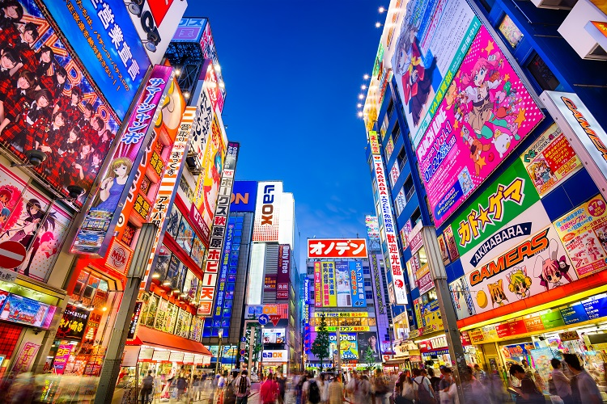

Hawai
Hawái, un estado de los EE.UU., es un archipiélago volcánico aislado en el Pacífico central. Sus islas son famosas por sus paisajes escabrosos de riscos, cascadas, follaje tropical y playas con arenas doradas, rojas, negras e incluso verdes.
Hawái, un estado de los EE.UU., es un archipiélago volcánico aislado en el Pacífico central. Sus islas son famosas por sus paisajes escabrosos de riscos, cascadas, follaje tropical y playas con arenas doradas, rojas, negras e incluso verdes.
Aruba, una pequeña isla del Caribe holandés frente a las costas de Venezuela, tiene un clima seco y soleado, playas claras y un oleaje suave. Los constantes vientos alisios traen brisas frescas y hacen que los árboles dividivi se inclinen hacia el suroeste.

Japón es una nación insular del océano Pacífico con densas ciudades, palacios imperiales, parques nacionales montañosos y miles de santuarios y templos. El tren bala Shinkansen conecta las islas principales de Kyushu (con las playas subtropicales de Okinawa), Honshu (con Tokio y el memorial del bombardeo atómico en Hiroshima) y Hokkaido (famosa por el esquí). .
Hotel + Vuelo + Desayuno
Precios desde $500